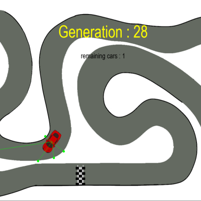
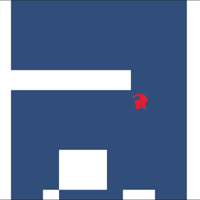
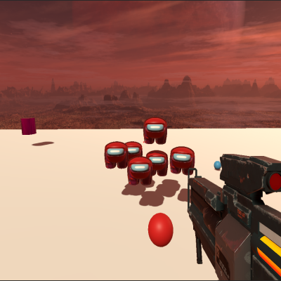
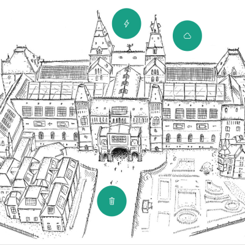
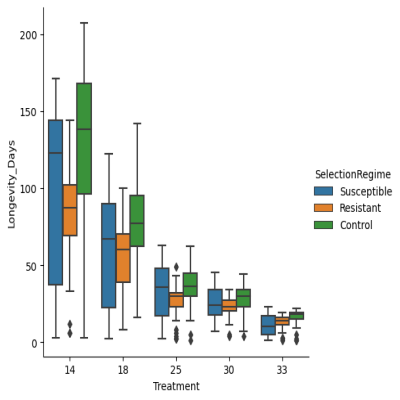

I am a student at the Metis Montessori Lyceum
Welcome to my Portofolio
I am a student at the Metis Montessori Lyceum
I am Pablo Perez Raya
I am part of the Coderclass
My first Project was to make an AI that could drive around a racetrack on its own. To do this I used Pygame to create an environment and a module called NEAT for its neural network. The racetrack is handmade and the AI can identify the edges of the track and checkpoint by checking for the color of the background underneath it. By giving the AI point for every checkpoint is crosses it will try to go trough as many as possible and complete the circuit.
For my second project I created a 2D platformer game in unity, In this game you play as a "crewmate" form among us, and must avoid impostors to find the body of your murdered crew. To accomplish this you must complete various platforming challenges to gain new abilities and progress.
My third project was also in Unity, however this time I used an extra dimension and created a 3D shooter, which is also based upon among us. In contrast to my first game, there are UI elements and various menus. The game features different types of weapons with unique ammunition and playstyles. In your way stand a few different kinds of enemies who require a unique approach to overcome.
My fourth project was in collaboration with Hugo van Dieren. He was to make an Interactive website for the Rijksmuseum, and together we made a website with HTML5 and CSS3 that satisfied their needs. The website features an interactive interface which it used to inform the user about the energy policy and the museum, what what it does to make sure it is enviromentally friendly.
My final project is related to my PWS, which was about evolutionary theories of ageing. To test the theories we used fruit flies as a model organism, and to use the data we first had to analyse it. To do this we used Jupyter and python to manipulate the database and find the answers we sought. I also analysed a different database, which is also about flies, to gain a better unterstanding of how to work with data analysis and to work with a bigger dataset.
